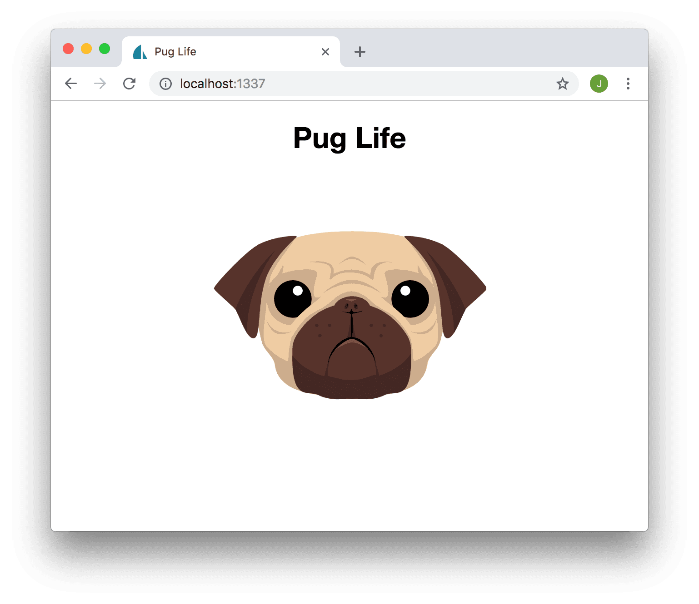

Using Pug templates with Sails.js
For a while now I’ve been hacking on a few Sails.js based projects, my long-running pet project ZHDict being one of them.
After hacking on some Hexo themes, the first of which (which you’re currently looking at) uses Pug templating (the template engine formerly known as Jade) behind the scenes to render the HTML, and I’ve kinda grown to like it. You can think of pug as the love-child creation of Python and HTML after a steamy night of flipping bits. IMHO it’s much nicer than the default EJS templating that ships with Sails.
All this got me thinking, what if I could combine the concise, pointy-bracket free pidgin that is Pug with the swishy node.js web framework that is Sails.js?
For the record, the following is my experience with Sails v1.0.2.
First things first
Want to play along at home? Make sure you’ve got node.js installed, as well as the Sails CLI tools.
npm install -g sails
You might need to but probably shouldn’t but still can add a sudo to the start of that command in Linux/OSX land if it doesn’t let you install it globally (that’s what the -g bit’s all about). I can’t give you any suggestions if you’re running Windows.
Getting started with Pug & Sails.js
To keep things simple, let’s start off with a new Sails.js project by using the provided cli tools. The following command will create a new Sails project in a directory called ‘puglife’:
sails new puglife
You should be met with the following options. For the sake of this example I’m going with 2. Empty, but the Web App starter is a pretty kick-ass starting point, albeit confusing in places and fairly opinionated. If you do start off with the “Web App” sails template, do note that all the bundled template files will be EJS and not pug // TODO: Insert sad pug face here.
Choose a template for your new Sails app:
1. Web App · Extensible project with auth, login, & password recovery
2. Empty · An empty Sails app, yours to configure
(type "?" for help, or <CTRL+C> to cancel)
Now sit back and wait a bit while some dependencies are installed.
info: Installing dependencies...
Press CTRL+C to cancel.
(to skip this step in the future, use --fast)
info: Created a new Sails app `puglife`!
Hopefully the output in your terminal is more pretty and colourful than it is here Ok neato! Our fresh Sails.js project is set up and ready to go, so lets take a look, shall we?
cd puglife
sails lift
The sails lift command should start the devlopment server. If you are following along at home, run the above then check out http://localhost:1337 in your web browser. Zim zim zala bim, you should see your shiny new sails project in all it’s glory.
Pug it up
Ok, so this was supposed to be about using Pug templates and Sails.js, right? Right! Before we can make things pugtastic, we need to install a couple more dependencies. From your project folder, run
npm install --save consolidate pug
This will install, you guessed it, consolidate and pug, as kinda recommended in the Sails docs.
Configure Sails and Pug with Consolidate
Now we’ll need to tell Sails to use Pug instead of the default EJS templating engine. To do that, we’re going to have to switch up the guts of the project’s config/views.js file.
For now, the config/views.js should only contain the following:
module.exports.views = {
extension: 'pug',
getRenderFn: function() {
// Import `consolidate`.
var consolidate = require('consolidate');
// Return the rendering function for Swig.
return consolidate.pug;
},
layout: false,
};
You can keep the default comments in there if you wish, I’ve only ommitted them here as they’re irellevant for our purposes.
The extension: tells Sails, I suppose, to look for files that end with ‘.pug’, and the getRenderFn: loads in consolidate and in turn pug to actually render our templates. As Sails can’t load up our pug “layouts”, we’ll also need to set layout to false.
At this stage, if you re-run sails lift and open your site in a web browser, you’ll be met with a bunch of gobbledygook about not being able to render your views:
{
"message": "Could not render view \"pages/homepage\". Tried locating view file @ \"/Users/jarrod/workspace/puglife/views/pages/homepage\".",
"code": "E_VIEW_FAILED",
"status": 500,
"view": {
"defaultEngine": "pug",
"ext": ".pug",
"name": "pages/homepage",
"root": "/Users/jarrod/workspace/puglife/views"
}
}
This isn’t a bad thing, it’s progress! We’re almost there guys, jus' hang loose, blood. She gonna catch ya up on da rebound on da med side..
Creating our templates
At the very least, we’re going to need two pug templates to render our homepage. The first of which, views/layouts/layout.pug, is gonna contain all the HTML-ey, doc-typey, styles and script including stuff we need.
doctype html
html
head
meta(charset='UTF-8')
title Pug Life
meta(http-equiv='X-UA-Compatible', content='IE=edge,chrome=1')
meta(name='viewport', content='width=device-width, initial-scale=1')
<!--STYLES-->
<!--STYLES END-->
body
// Header
block content
// Footer
<!--SCRIPTS-->
<!--SCRIPTS END-->
SORRY! This thing doesn't highlight pug/jade code unfortunately 😞 I'll work on getting it fixed
That should be enough to get started for now. It will be the basic scaffolding for each of the pages in our Sails project. I’ve left the header and footer as an exercise for the reader.
Those <!--COMMENTS--> are used by Sails to inject your stylesheets and scripts into the page. I’d leave them in there if I were you - shouldn’t break anything, but you can pugify them and modify tasks/config/sails-linker.js to look for pug-style comments instead if you like (see the project link below for an example of how).
Now we need a homepage template. It’s going to live in the views/pages/homepage.pug file if you started off with the Empty project.
extends ../layouts/layout
block content
div(align="center")
h1(style="font-family: 'Helvetica Neue', Helvetica, Arial, sans-serif") Pug Life
img(src="https://goo.gl/Maapfu" style="max-width: 300px")
Yes, something like this should do the trick 😏
sails lift again, and welcome yourself to Pug Life. 
The final touches
Remember how I said those <!--COMMENTS--> in the layout.pug file are where Sails will inject your CSS and JavaScript dependencies? That was only half true - first we need to tell it to do that.
Open up the file tasks/config/sails-linker.js, and replace all instances of “.ejs” with “.pug”. Save, restart sails and we should be good to go!
BUT I WANT IT NOW
To avoid having to go through all the rigmarole of configuring and tweaking the view/template config when spinning up a new Sails project, and so that the core ‘Web App’ functionality of Sails is available in puggy form, I’ve created a little starter sails-and-pug-and-bulma-and-vue project, and left it up on GitHub in all it’s furry glory if you’d fancy a look.
I christen this monstrosity sails-starter-pugma. You can find it here, on GitHub in the lab, if it sounds like your thing.
🐶